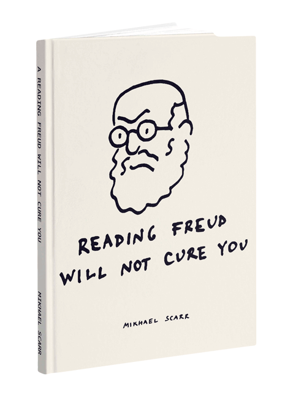
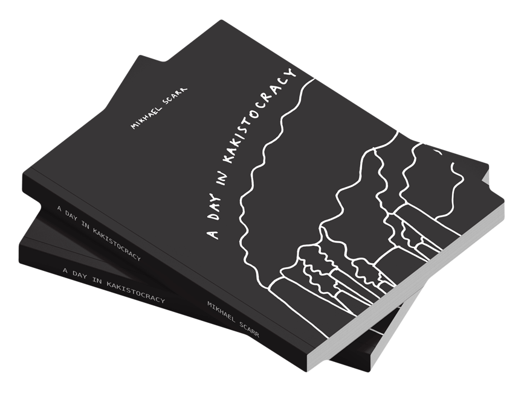

Darkly brilliant, addictively hilarious scrawls from the subconscious. Immediate and incisive, his bite-sides drawings capture the human condition, ridiculous, humour and absurd.


A Day in Kakistocracy
by Mikhael Scarr
First edition, 2020
87 original drawings
180 pages
An implacable take on a post-truth world. Dystopian and satirical, the bite-size drawings depict a cultic society unmoored from reality, egocentric, consumerist, and delusional.